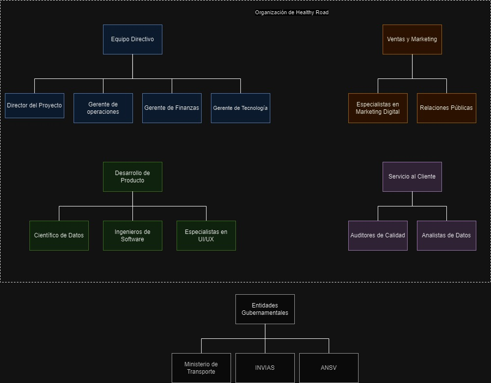
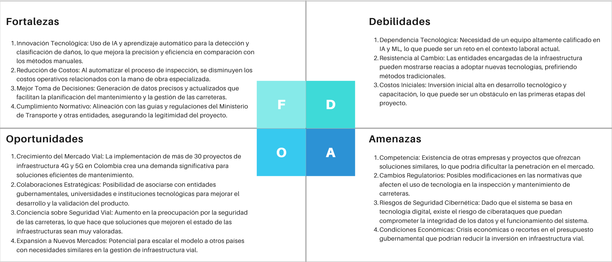

« Índice
Plan de Negocios
Análisis de Mercado
En la siguiente tabla se mostrará a qué merccado está involucrado el producto teniendo en cuenta la
estructura financiera definida en el estudio de mercado [6]
Tabla 1. Estructuración del mercado para Healthy Road.
| CONCEPTO |
HECHOS |
| Tamaño |
Propuesta inicial: Tener un promedio mensual de 51 licencias vendidas.
Mayor éxito: 100 licencias vendidas. |
| Tendencias |
Hoy en día, en Colombia las instituciones gubernamentales o empresas,
realizan la inspección de carreteras por medio de sensores o máquinas de alto costo [14]. |
| Segmentación |
Entidades gubernamentales: INVIAS, ANI y las secretarías o células de
cada municipio o departamento en Colombia.
Empresas que desarrollen obras de pavimentación de carreteras: Constructora Conconcreto, Grupo Odinsa, Construcciones El Cóndor,
Autopistas del Café, Covipacífico, Covimar, Cenit Transporte y Logística de Hidrocarburos, Geomaat, CEMEX, etc.
|
| Competencia |
En Colombia, no se encuentra información en la web sobre clientes de interés que utilicen
softwares basados en IA para diagnosticar pavimentos o carreteras. |
Barreras de entrada
- Costos de mantenimiento y escalabilidad. A medida que avanza su uso, la cantidad de datos que se deberán
procesar en poco tiempo puede provocar problemas de concurrencia [15], que puede afectar la estabilidad del software.
Si se desea mejorar el desempeño del modelo a imágenes de Colombia, implementar una solución en diversas regiones del país
puede requerir recursos adicionales para despliegue y soporte técnico.
- Resistencia al cambio. Las organizaciones acostumbradas a métodos tradicionales de inspección manual (como el método VIZIR [16])
pueden mostrar resistencia a adoptar nuevas tecnologías (en especial si existe falta de familiaridad con la IA), especialmente
si sienten que puede haber un riesgo percibido asociado con el cambio.
- Infraestructura tecnológica. La falta de infraestructura tecnológica adecuada en ciertas regiones de Colombia,
como acceso limitado a internet de alta velocidad, podría dificultar el uso efectivo de la aplicación en áreas remotas [17].
Además, la capacidad de procesamiento y almacenamiento en la nube puede ser limitada o costosa en algunas zonas, lo que podría afectar
la eficiencia del procesamiento de imágenes de manera asíncrona.
- Aceptación y confianza. Las organizaciones y entidades públicas podrían tener dudas sobre la fiabilidad,
precisión y ética del uso de IA para la toma de decisiones críticas en seguridad vial. Pueden existir preocupaciones
en torno a la privacidad, la seguridad de los datos y la protección de la información que maneja la aplicación [18].
Características clave del producto
Análisis de imágenes y Bases de Conocimiento
Existen diversas metodologías y enfoques que pueden abordar este problema. En particular,
debido a las imágenes de entrenamiento disponibles [23], se consideró necesario estructurar el modelo de manera robusta.
Por ello, se decidió utilizar un modelo Vision Transformer (ViT), que tiene un funcionamiento similar al Transformer empleado en el
procesamiento de lenguaje natural, pero adaptado para trabajar con imágenes. Específicamente, se planea realizar un ajuste fino (fine-tuning)
sobre un modelo YOLO, es decir, entrenar a partir de un modelo ya preentrenado.
Se implementó un proceso de fine-tuning utilizando dos arquitecturas de YOLOS:
- yolos-small (modelo “hustvl/yolos-small” de la librería YolosImageProcessor de transformers), entrenado con imágenes de carreteras de Japón, Noruega e India.
- yolov8s (modelo “yolov8s.pt”), entrenado con todas las imágenes disponibles.
Diferencias entre YOLOS-Small y YOLOv8s
Aunque ambos modelos tienen estructuras similares, se diferencian en sus enfoques:
-
YOLOv8s: Más eficiente, utiliza CNNs para extracción de características, ideal para aplicaciones en tiempo real.
-
YOLOS-Small: Basado en transformers, enfocado en modelar relaciones espaciales complejas.
Proceso de Aprendizaje de YOLO
- Preparación de Datos: Las imágenes se redimensionan (512x512 a 874x874) y se etiquetan con
clases y bounding boxes (coordenadas x, y, w, h).
-
División en Cuadrículas: La imagen se divide en celdas responsables de predecir clases de interés según los bounding boxes.
- Forward Pass:
- Backbone: Capas de redes convolucionales convierten cada celda en mapas de características que capturan información de patrones y formas.
- Neck: Combina características de diferentes niveles para mejorar la detección de objetos en múltiples escalas.
- Head: Predice las coordenadas del bounding box, calcula la confianza y predice la clase del objeto.
-
Retropropagación y Optimización: Se calculan los errores de las coordenadas del bounding box, la confianza y la clase predicha. Estos errores se
retropropagan para ajustar los pesos de la red utilizando optimizadores como Adam o SGD.
Este proceso permite mejorar la precisión y robustez de los modelos YOLO, adaptándolos a imágenes específicas mediante el fine-tuning.
Para ampliar la información se puede ver en el trabajo anterior el apartado de “Metodología de IA a implementar” [4].
Seguridad y confidencialidad
El documento de Microsoft destaca los desafíos de seguridad que enfrentan los sistemas de inteligencia artificial (IA) y aprendizaje automático (ML), subrayando la necesidad de adoptar prácticas de seguridad específicas para proteger estos sistemas y los datos asociados. Microsoft señala que los modelos de ML no diferencian adecuadamente entre entradas malintencionadas y anómalas inofensivas, lo que puede permitir la manipulación de los conjuntos de datos públicos que alimentan estos modelos. Esto plantea riesgos significativos, ya que la IA está siendo utilizada en decisiones de alto valor, como en la medicina, donde los errores podrían tener graves consecuencias. Además, el documento alerta sobre la falta de transparencia en los modelos de aprendizaje profundo, lo que dificulta la defensa de sus decisiones cuando son cuestionadas. Se subraya la necesidad de desarrollar capacidades forenses en IA y ML para hacer frente a estos problemas [24].
El proyecto Healthy Road se enfoca en monitorear el estado de las carreteras utilizando algoritmos de inteligencia artificial (IA) y aprendizaje automático (ML). Los desafíos de seguridad que podrían afectar a este proyecto están relacionados con la fiabilidad de los datos de entrada, la integridad de los modelos de IA y la transparencia en la toma de decisiones automatizadas. Abordar estos desafíos es crucial para garantizar que el sistema funcione correctamente, evite manipulaciones maliciosas y genere confianza en sus resultados.
Desafíos de seguridad específicos en Healthy Road
-
Manipulación de datos de entrada: Los sistemas de monitoreo vial de Healthy Road probablemente recopilen grandes volúmenes de datos, como imágenes de carreteras, información sobre el tráfico y mediciones de sensores. Un atacante podría intentar inyectar datos maliciosos o anómalos en estos flujos de datos para afectar las predicciones del sistema. Por ejemplo, alterar imágenes o modificar lecturas de sensores podría generar diagnósticos incorrectos sobre el estado de la carretera, provocando una toma de decisiones inadecuada.
Solución: Implementar validación de datos estricta y técnicas de detección de anomalías antes de que estos ingresen a los modelos de ML. Los datos deben pasar por filtros y algoritmos que identifiquen inconsistencias, anomalías y patrones sospechosos. Además, se podría utilizar blockchain para asegurar la integridad de los datos de sensores.
-
Manipulación de los modelos de IA: Dado que los modelos de ML en Healthy Road podrían entrenarse con datos históricos de carreteras y condiciones de tráfico, un atacante podría intentar inyectar datos maliciosos en el conjunto de entrenamiento para "envenenar" el modelo, haciendo que este aprenda patrones erróneos. Esto podría afectar negativamente la precisión del modelo a la hora de identificar problemas reales en la infraestructura vial.
Solución: Para evitar ataques de envenenamiento de datos, se debe implementar una revisión continua de los conjuntos de datos de entrenamiento. Además, es recomendable utilizar técnicas de robust machine learning, que fortalezcan los modelos contra manipulaciones, como adversarial training. Esto implica entrenar a los modelos para que sean resistentes frente a entradas maliciosas diseñadas para confundirlos.
-
Falta de transparencia y capacidad de auditoría: Uno de los problemas señalados por Microsoft es la opacidad de los modelos de IA, especialmente los de aprendizaje profundo, que pueden actuar como "cajas negras" cuyas decisiones son difíciles de interpretar y justificar. En un proyecto como Healthy Road, donde se puede requerir justificar las decisiones tomadas (por ejemplo, cuando una autoridad necesita saber por qué se recomendó el cierre de una vía), esta opacidad puede ser un gran problema.
Solución: Incorporar técnicas de IA explicable (XAI, por sus siglas en inglés) en el diseño del sistema. Estas técnicas permiten que los modelos de IA generen explicaciones comprensibles sobre cómo llegaron a una conclusión. Esto no solo aumenta la transparencia, sino que facilita la auditoría de las decisiones del sistema. Además, se podrían generar informes automáticos detallados para cada decisión importante que tomen los algoritmos de Healthy Road, permitiendo que ingenieros o autoridades revisen el razonamiento detrás de una alerta o recomendación.
-
Uso indebido de la IA en decisiones críticas: En el contexto de Healthy Road, las decisiones sobre el estado de una carretera o la necesidad de mantenimiento pueden ser críticas para la seguridad pública. Si la IA toma decisiones incorrectas (ya sea por datos erróneos o un fallo en el modelo), las consecuencias podrían incluir accidentes, daños a infraestructuras o gastos innecesarios.
Solución: Además de las técnicas mencionadas, como XAI y la validación de datos, se deben implementar mecanismos de retroalimentación humana en decisiones críticas. Un enfoque híbrido, donde las decisiones importantes sean revisadas por ingenieros humanos antes de ser ejecutadas, puede reducir el riesgo de errores graves. También es fundamental crear capacidades forenses dentro del sistema para rastrear el origen de cualquier fallo en la toma de decisiones y corregirlo rápidamente.
Acciones estratégicas para proteger el proyecto
-
Evaluaciones de riesgo continuas: Realizar auditorías regulares de seguridad en el sistema de IA para identificar vulnerabilidades potenciales en los algoritmos, los datos de entrenamiento y el entorno de implementación.
-
Colaboración con expertos en seguridad y ética: Involucrar a especialistas en ciberseguridad y ética de la IA desde la etapa de diseño del sistema, asegurando que se aborden preocupaciones relacionadas con la privacidad y el uso indebido de los datos.
-
Mejorar la seguridad en los datos de entrada: Desarrollar protocolos de cifrado y autenticación fuertes para proteger los datos que se recopilan a través de sensores, cámaras y otros dispositivos conectados, evitando su manipulación.
Beneficios del producto
El proyecto Healthy Road tiene como objetivo optimizar el proceso de inspección y clasificación de daños en las carreteras en Colombia, aprovechando tecnologías avanzadas de inteligencia artificial y aprendizaje automático. A continuación, se detallan los principales beneficios que este proyecto puede ofrecer en el contexto de las concesiones viales 4G y 5G en el país.
-
Eficiencia en la Inspección de Vías
El procedimiento VIZIR actual implica una inspección manual exhaustiva que requiere la presencia de ingenieros especializados, lo que consume tiempo y recursos económicos significativos. Al automatizar la clasificación de daños, Healthy Road puede reducir drásticamente el tiempo necesario para realizar estas inspecciones. Esto permite que las auditorías se lleven a cabo con mayor frecuencia, contribuyendo a un mejor mantenimiento preventivo y reactivo de las carreteras.
-
Reducción de Costos
Al eliminar la necesidad de inspecciones manuales extensivas, se minimizan los costos asociados con la contratación de personal especializado y los gastos operativos vinculados a las inspecciones físicas. Esto no solo representa un ahorro significativo para las entidades encargadas de las concesiones viales, sino que también puede liberar recursos que pueden ser destinados a otras áreas críticas del mantenimiento vial.
-
Mejor Calidad en la Clasificación de Daños
El sistema de Healthy Road se centra en la identificación automatizada de los tipos más comunes de daños en el pavimento, como grietas longitudinales, grietas transversales, piel de cocodrilo y baches. Al utilizar algoritmos de clasificación de imágenes, el proyecto puede lograr un alto grado de precisión y consistencia en la identificación de estos defectos. Esto mejora la calidad de los datos recopilados, facilitando la planificación de intervenciones de mantenimiento más efectivas.
-
Creación de Mapas de Deterioro en Tiempo Real
La capacidad de generar “mapas de deterioro” de forma automatizada permite una visualización clara del estado de las carreteras. Estos mapas, que identifican la localización exacta y la severidad de los daños, facilitan la toma de decisiones informadas sobre dónde enfocar los esfuerzos de mantenimiento. Esto no solo mejora la gestión del tiempo y los recursos, sino que también permite una respuesta más rápida a los problemas críticos.
-
Impulso a la Innovación en el Sector Vial
La implementación de Healthy Road representa un avance significativo en la modernización de los procesos de mantenimiento vial en Colombia. Al integrar tecnologías de IA y ML en la gestión de infraestructuras, el proyecto no solo mejora la eficiencia operativa, sino que también establece un estándar para el uso de tecnología en el sector, promoviendo una cultura de innovación y mejora continua.
-
Alineación con Normativas y Requerimientos de Seguridad Vial
El uso de un sistema automatizado para la identificación de daños en las carreteras contribuye a cumplir con las exigencias de seguridad vial establecidas por el Ministerio de Transporte y la Agencia Nacional de Seguridad Vial (ANSV) [25], [26]. La mejora en la calidad de los datos y la capacidad para realizar auditorías más frecuentes y precisas ayuda a asegurar que las carreteras mantengan altos estándares de seguridad, protegiendo así a los usuarios y fomentando la confianza en la infraestructura vial.
-
Contribución a la Sostenibilidad
Al optimizar los procesos de mantenimiento, Healthy Road puede contribuir a la sostenibilidad ambiental. Un mantenimiento más efectivo reduce la necesidad de reparaciones extensivas y prolonga la vida útil de las carreteras, lo que puede disminuir el impacto ambiental asociado con la construcción y rehabilitación de infraestructuras.
En resumen, el proyecto Healthy Road no solo aborda los desafíos actuales de inspección y clasificación de daños en las carreteras de Colombia, sino que también promete transformar la gestión de las concesiones viales a través de la innovación tecnológica, brindando beneficios significativos en términos de eficiencia, costos y calidad. Esto se alinea perfectamente con los objetivos de mantener y mejorar la infraestructura vial en el contexto de los más de 30 proyectos 4G y 5G en curso en el país [1].
Organización y estructura
Para el proyecto Healthy Road, una organización y estructura bien definida es crucial para asegurar su éxito. A continuación se propone una estructura organizativa que abarca las diferentes áreas necesarias para su funcionamiento eficiente:
Imagen. Organigrama de Healthy Road

Análisis FODA
Imagen. FODA de Healthy Road

Proyecciones Financieras
Basado en el Análisis financiero presentado en el trabajo 2 [4]:
-
Se proyecta un flujo de fondos neto (Quitando el retorno de 30% de las ganancias a los inversionistas) que los primeros dos meses serán positivos a nivel financiero para el flujo de fondos debido al músculo de 150 M COP dado por el inversionista y una recuperación de ingresos en los últimos dos meses del primer año por haber superado una cobertura del 55% en las licencias mensuales.
-
Se proyecta un flujo de fondos neto, para el primer año de operación, negativo desde el mes 2 hasta el mes 10, debido a que en esos meses, la inversión inicial se agotaron por la puesta en marcha de los dos primeros meses, y el avance lento de la cobertura de demanda, hace que tarde más en obtener ganancias.
-
El valor presente neto de la proyección mensual, en el primer año, muestra que el proyecto genera ganancias de 32 M aproximadamente en el primer año, lo que indica una supervivencia exitosa en el primer año del producto vendiendo licencias mensuales y retornando al inversionista cerca del 40% del capital inicial dado. Además, si en el mes 6 se tuviera un ingreso por licencias anuales del 15% de las 50 proyectadas en ese mes, este aumenta el valor presente neto en un 25% aproximadamente.
-
Dado el análisis financiero, se espera que con la venta de licencias mensuales se tengan años positivos en todos los años, menos en el segundo año, debido a que es el primer año en el que no se tiene el músculo de la inversión inicial y, al no tener suficiente demanda cubierta.
-
En un ciclo del proyecto de 10 años, se obtiene un valor presente neto de 245 M aproximadamente y ganancias netas, del capital invertido, de 210 M para el inversionista, llegando a devolver los 150 M en el año 8. Además, si se realiza por año, con la compra de licencias anuales como se expresó en aquel ítem, se lograría tener un valor presente del flujo anual cerca de 752 M, y, llegando a triplicar aproximadamente la inversión inicial de 150 M.
Plan de Recursos Humanos
Objetivos del Plan de Recursos Humanos
-
Atraer y retener talento altamente calificado en áreas de inteligencia artificial, ingeniería, ventas y soporte.
-
Fomentar un ambiente de trabajo colaborativo y motivador.
-
Proporcionar capacitación continua para el desarrollo profesional del personal.
Proceso de Contratación
-
Definición de Perfiles: Crear descripciones de trabajo claras que detallen las habilidades y competencias requeridas para cada puesto.
-
Estrategias de Atracción: Utilizar plataformas de empleo, redes sociales y ferias de empleo para atraer candidatos. Colaborar con universidades y centros de formación técnica para identificar talento emergente.
-
Selección: Implementar un proceso de selección que incluya entrevistas, pruebas técnicas y evaluaciones psicométricas para garantizar que los candidatos cumplan con los requisitos.
Capacitación y Desarrollo
-
Programa de Inducción: Ofrecer una inducción completa para nuevos empleados que abarque la cultura organizacional, procesos y objetivos del proyecto.
-
Capacitación Continua: Desarrollar programas de formación en habilidades técnicas (IA, ML, software) y habilidades blandas (comunicación, trabajo en equipo).
-
Mentoría y Coaching: Implementar un sistema de mentoría donde empleados más experimentados guíen a los nuevos en su desarrollo profesional.
Evaluación de Desempeño
-
Sistema de Evaluación: Establecer un sistema de evaluación del desempeño que incluya objetivos claros y medibles, así como retroalimentación regular.
-
Revisiones Anuales: Realizar revisiones anuales para discutir el rendimiento, las áreas de mejora y las oportunidades de desarrollo profesional.
Retención de Talento
-
Beneficios y Compensación: Ofrecer paquetes competitivos de compensación y beneficios, incluyendo incentivos y bonificaciones por desempeño.
-
Ambiente de Trabajo: Fomentar un ambiente de trabajo inclusivo y diverso que valore las opiniones y contribuciones de todos los empleados.
-
Oportunidades de Crecimiento: Promover oportunidades de avance profesional y desarrollo de carrera dentro de la organización.
Cultura Organizacional
-
Valores y Misión: Definir y comunicar claramente los valores y la misión del proyecto, asegurando que todos los empleados se alineen con ellos.
-
Comunicación Abierta: Evaluar regularmente el plan de recursos humanos y realizar ajustes según sea necesario, en función de las necesidades del proyecto y del feedback del personal.
Estrategia de crecimiento y desarrollo
Objetivos Estratégicos
-
Expansión del Mercado: Ampliar la presencia en el mercado de infraestructura vial en Colombia y explorar oportunidades en otros países
-
Innovación Continua: Mejorar constantemente la tecnología y los procesos del sistema para mantenerse a la vanguardia de la industria.
-
Sostenibilidad: Implementar prácticas sostenibles en el desarrollo y mantenimiento de la infraestructura vial.
Análisis de Mercado
-
Investigación de Mercado: Realizar un análisis exhaustivo del mercado para identificar tendencias, necesidades de los clientes y posibles competidores.
-
Segmentación de Clientes: Definir segmentos de clientes, como entidades gubernamentales, empresas constructoras y consultoras de infraestructura, para adaptar las estrategias de marketing y ventas.
Diversificación de Productos y Servicios
-
Mejoras en el Sistema: Invertir en I+D para desarrollar nuevas características y funcionalidades del sistema que respondan a las necesidades cambiantes de los usuarios.
-
Servicios Complementarios: Ofrecer servicios adicionales, como asesoría en mantenimiento y auditoría de carreteras, para proporcionar un paquete completo a los clientes.
-
Formación y Capacitación: Implementar programas de formación para usuarios finales y personal técnico de las entidades contratistas.
Alianzas Estratégicas
-
Colaboraciones con Universidades: Establecer alianzas con instituciones académicas para acceder a talento, investigación y desarrollo conjunto de tecnologías.
-
Asociaciones con Entidades Gubernamentales: Colaborar con entidades del gobierno para proyectos piloto y validaciones de tecnología, lo que puede facilitar la adopción del sistema.
-
Networking con la Industria: Participar en ferias y eventos de la industria para establecer contactos y promocionar el sistema.
Estrategias de Marketing y Ventas
-
Marketing Digital: Implementar campañas de marketing digital, incluyendo SEO, marketing en redes sociales y contenido de valor, para aumentar la visibilidad y atraer clientes.
-
Demostraciones y Pilotos: Ofrecer demostraciones del sistema y proyectos piloto a potenciales clientes para mostrar sus beneficios y eficacia.
-
Testimonios y Casos de Éxito: Publicar testimonios y casos de éxito de clientes actuales para construir confianza y credibilidad en el mercado.
Evaluación del Rendimiento
-
Métricas Clave: Definir KPIs (indicadores clave de rendimiento) para evaluar el crecimiento y el rendimiento del proyecto, como la satisfacción del cliente, el tiempo de respuesta y la eficiencia operativa.
-
Revisiones Periódicas: Realizar evaluaciones trimestrales del progreso hacia los objetivos estratégicos y ajustar las estrategias según sea necesario.
Sostenibilidad y Responsabilidad Social
-
Prácticas Sostenibles: Implementar prácticas sostenibles en el desarrollo del sistema y en la operación del negocio, minimizando el impacto ambiental.
-
Iniciativas de Responsabilidad Social: Desarrollar programas que contribuyan a la comunidad, como capacitaciones gratuitas en el uso de tecnologías de inspección vial para estudiantes de ingeniería.
Adaptación y Flexibilidad
-
Escucha Activa del Cliente: Mantener canales abiertos de comunicación con los clientes para recibir retroalimentación constante y ajustar el producto y servicios según sus necesidades.
-
Iniciativas de Responsabilidad Social: Adoptar metodologías ágiles que permitan al equipo adaptarse rápidamente a cambios en el mercado o en la tecnología.
« Índice